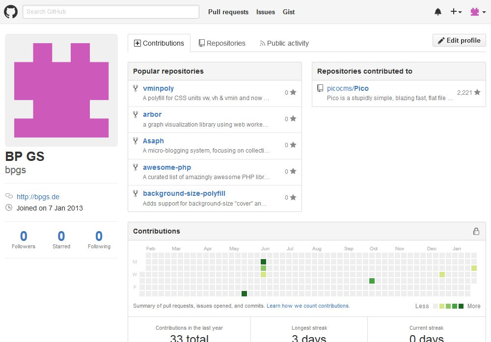
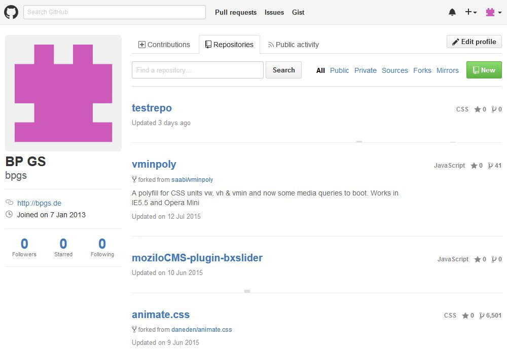
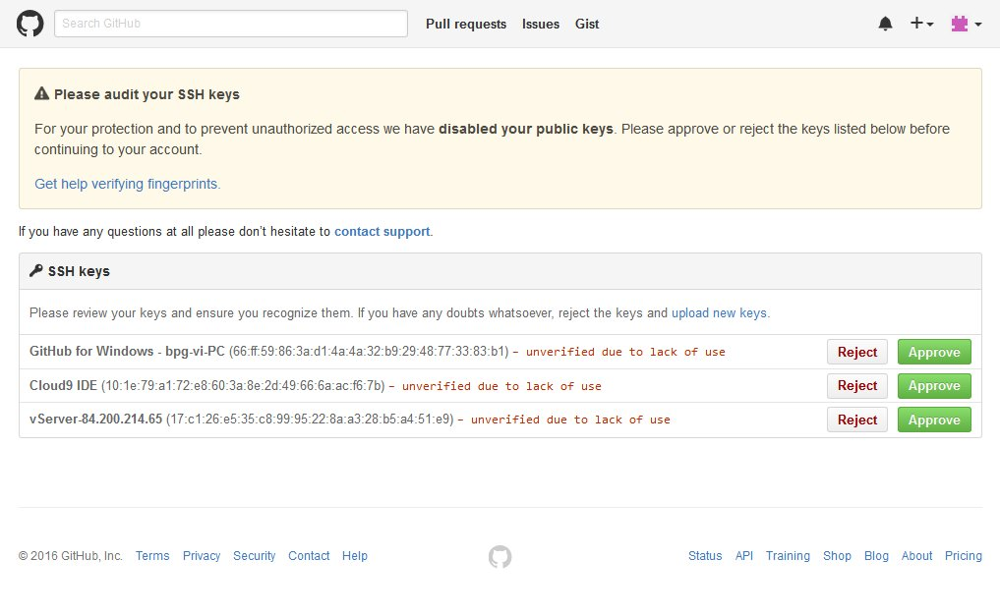
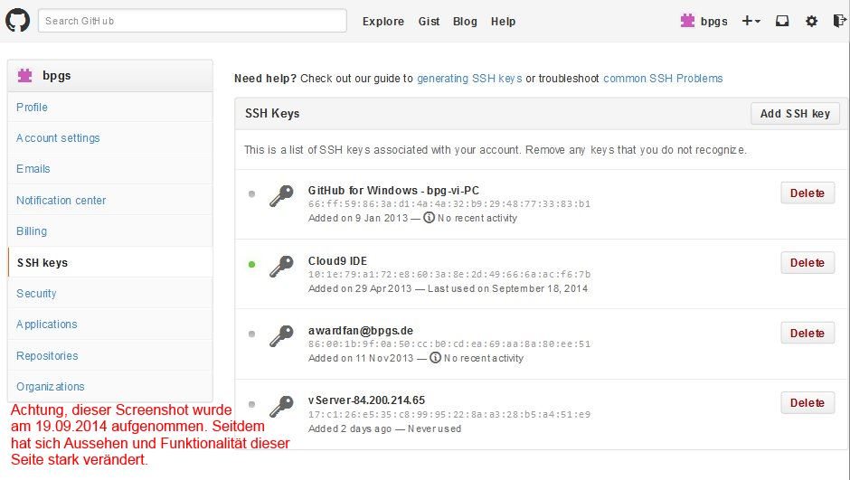
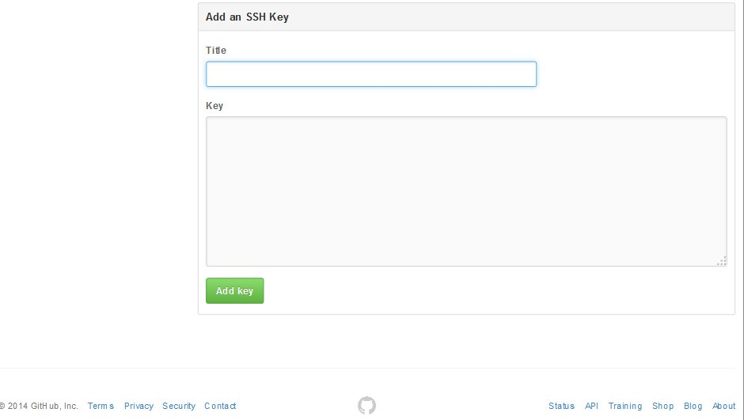
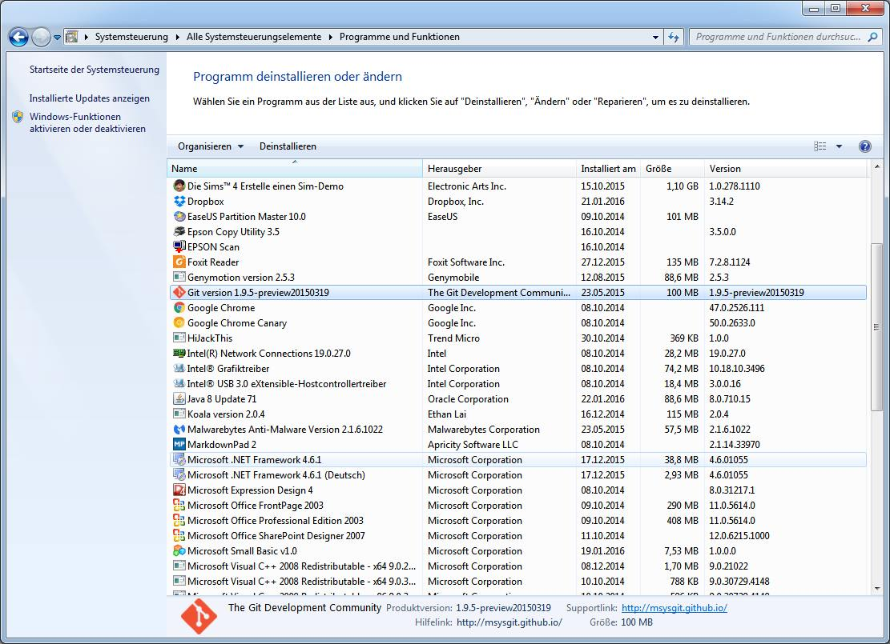
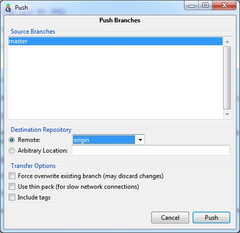
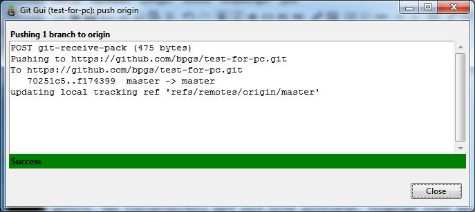
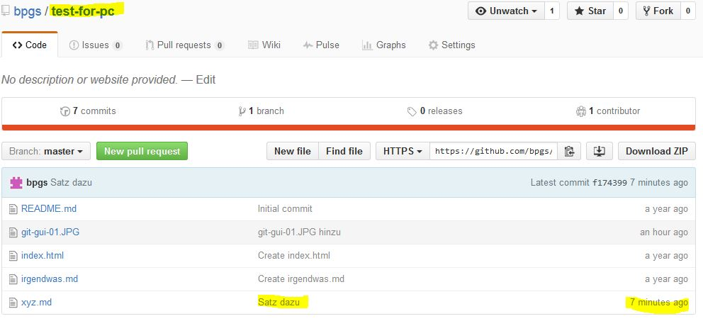
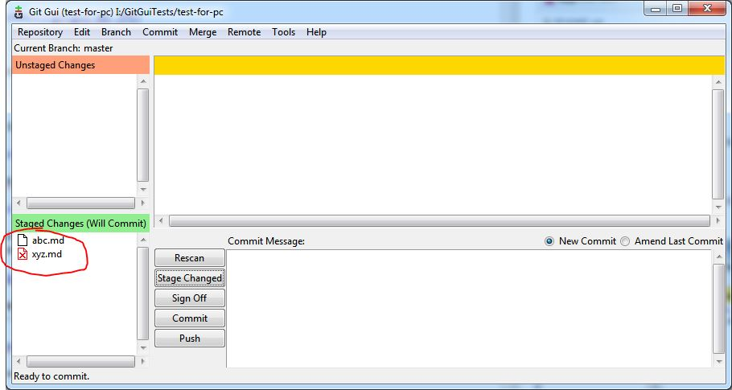

Meine Github-Projekte sind erreichbar über https://github.com/bpgs. Sieht so aus:

Nach Click auf Repositories sieht man

Die Public Profile Seite, die man nach Klick auf Edit profile sieht, sieht so aus
Hier findet man auch die Unterseite SSH-Keys. Sie hat sich gegenüber dem Screenshot vom 19.09.2014 (siehe unten) stark verändert:

Sobald man einen Key mit Approve bestätigt, verschwindet er in dieser Übersicht. Diese Bestätigung kann man unter Security -> Security history nachvollziehen.
Im Github-Account wurde die Test Repository test-for-pc erstellt
Hier kann man nicht mit Git arbeiten. Ist nicht installiert.
Git ist installiert
ssh-keygen ist nicht installiert. Es lässt sich also kein SSH Key erzeugen.
Achtung, das Aussehen und die Funktionalität der mit den Screenshots dokumentierten Seite hat sich zwischenzeitlich stark verändert (siehe Screenshots weiter oben).
Am 17./18.9.2014 wurde dort Git eingerichtet. Man findet daher auf den SSH Key in der Github-Einstellungsseite:

Das Hinzufügen eines SSH-Keys erfolgt auch dort mit

Bei der Einrichtung wurde weitgehend diese Anleitung https://help.github.com/articles/set-up-git#platform-linux befolgt.
Mit
git config --global user.name "YOUR NAME"
und
git config --global user.email "YOUR EMAIL ADDRESS"
Das spiegelt sich auch in der Datei
/root/.gitconfig
wieder.
Wenn man unter SSH mit Git arbeiten will, muss ein SSH Key generiert werden. Dies wird hier https://help.github.com/articles/generating-ssh-keys#platform-linux beschrieben.
Da ich mit
ls -al ~/.ssh
bereits einen Schlüssel vorgefunden habe, konnte ich mit Schritt 3 auf der genannten Seite fortfahren. Ich habe dort aber nicht xclip installiert, sondern die Datei auf den PC kopiert, diese mit Notepad++ geöffnet und den Key kopiert und in die Website eingefügt.
Der Test mit
ssh -T git@github.com
ist dann auch, einschließlich der angegebenen Meldung
The authenticity of host 'github.com (207.97.227.239)' can't be established. RSA key fingerprint is... Are you sure you want to continue connecting (yes/no)?
erfolgreich.
Das Forken einer Repo wird https://help.github.com/articles/fork-a-repo beschrieben. Ich habe meine eigene Test-Repo verwendet. Diese konnte mit
git clone https://github.com/bpgs/test-for-pc
erfolgreich geforkt werden.
Auch die Repo howto wurde geclont.
siehe auch https://github.com/selste/openDrive/wiki/GitBasics
Dazu neue Repo anlegen. Dabei schlägt git vor
Quick setup — if you've done this kind of thing before
dazu
touch README.md
git init
git add README.md oder git add *
git commit -m "first commit"
git remote add origin git@github.com:bpgs/testrepo.git
git push -u origin master
git remote add origin git@github.com:bpgs/testrepo.git
git push -u origin master
Repo testrepo im Browser angelegt
Auf Proplay Verzeichnis angelegt
mkdir testrepo
Ins Verzeichnis wechseln
cd testrepo
Datei anlegen
touch readme.md
Git benachrichtigen
git add *
oder
git add readme.md
Die vorgenommenen Änderungen ins Repository übernehmen
git commit -m "first commit"
Lokal zu Remote mit
git remote add origin git@github.com:bpgs/testrepo.git
git push -u origin master
Allerdings wurde jetzt auch ein Unterverzeichnis angelegt.
Jetzt wurde die Datei geändert. Trotzdem bringt
git push -u origin master
die meldung, dass alles aktuell sei. Daher
git commit -m "Update"
Bringt auch nichts. Also
git add readme.md
git commit -m "Update"
git push -u origin master
Update ist erfolgt.
Neue Datei
touch liesmich.md
git add liesmich.md
git commit -m "neue datei"
git push -u origin master
Alles ok. Der Kommentar "neue datei" wird nur für die neue Datei und das geänderte Unterverzeichnis übernommen.
Ich arbeite mit 2 unterschiedlichen Zugriffsvarianten
Dieses Programm sieht man in der Systemverwaltung mit

Es erscheint dann in der Programmübersicht mit
Git Bash wird aufgerufen mit
"C:\Program Files (x86)\Git\git-bash.exe" --cd-to-home
Git CMD
"C:\Program Files (x86)\Git\git-cmd.exe" --cd-to-home
und Git Gui mit
"C:\Program Files (x86)\Git\cmd\git-gui.exe"
Angenommen, alle Projekte befinden sich in G:\Gitprojekte dann kann man so vorgehen
cd /g
cd Gitprojekte/
mkdir ganzneu
cd ganzneu/
Git init
Damit wird dann im Verzeichnis G:\Gitprojekte\ganzneu\.git eine Repo angelegt. Wenn man jetzt
$ git clone https://github.com/bpgs/test-for-pc.git
oder auch nur
git clone https://github.com/bpgs/test-for-pc
ausführt, dann sieht man
Cloning into 'test-for-pc'...
remote: Counting objects: 9, done.
remote: Total 9 (delta 0), reused 0 (delta 0), pack-reused 9
Unpacking objects: 100% (9/9), done.
Checking connectivity... done.
Ein nochmaliges Ausführen ergibt
fatal: destination path 'test-for-pc' already exists and is not an empty directory.
Ausgangspunkt ist das leere Verzeichnis I:\GitGuiTests

Git Gui wird gestartet und die Option Clone Existing Repository wird gewählt:

Es soll mit der Repository test-for-pc gearbeitet werden. Die sieht auf GitHub so aus:

Das Eingabefenster wird also gefüllt mit
https://github.com/bpgs/test-for-pc.git
und
I:/GitGuiTests/test-for-pc
gefüllt. Das Zielverzeichnis darf noch nicht existieren. Insgesamt sieht das dann so aus:

Nach kurzer Zeit findet man das neue Unterverzeichnis test-for-pc mit den Dateien aus der entfernten Repository und einem weiteren Unterverzeichnis .git

Außerdem erscheint gleich im Anschluss das GitGui Arbeitsfenster

Jetzt ändere ich die Datei xyz.md mit einem beliebigen Editor und füge eine Zeile mit
Noch ein Satz dazu.
ein und speichere sie. Dann drücke ich auf Rescan. Jetzt erscheinen die Änderungen

Dann klicke ich auf Stage Changed

und trage einen Kommentar ein und drücke dann Commit. Jetzt sind alle Nachrichten und Veränderungen verschwunden. Ich drücke Push und es erscheint dieses Fenster:

Ohne weitere Veränderungen wird jetzt gepusht. Nach der Abfrage des Benutzernamens und des Passworts erscheint ein Nachrichtenfenster:

Das Ergebnis kann man nun in der entfernten Repo begutachten:

Man sieht das Änderungsdatum und den Kommentar zur letzten Änderung.
Jetzt habe ich die Datei xyz.md gelöscht und abc.md hinzugefügt. Wieder der gleiche Ablauf. Nach dem Rescan sieht man die beiden Änderungen:

wobei zu jeder Änderung ein andere Kommentar erscheint. Jetzt wieder Stage Changed. es kommt noch eine zwischenfrage, ob die neue Datei aufgenommen werden soll, dann sieht man

Danach noch abzeichen, committen und pushen. Jetzt sieht man die neue Datei in der entfernten Repo während die alte verschwunden ist: